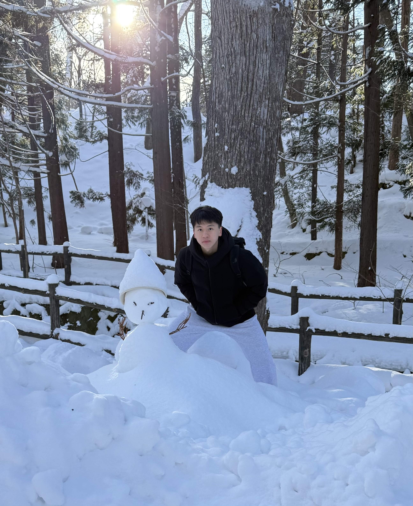

Dunjie Lu
Ph.D. Student
I'm a 1st year Ph.D. student at the University of Hong Kong, with deep focus and passion on NLP and multimodal agents. I'm fortunate to get advised by Prof. Tao Yu and be a part of the XLANG Lab. Previously I got my bachelor's degree of Computer Science and Technology at Sun Yat-sen University.

Experiences

Qwen Team, Alibaba Group
Research Intern
May 2025 — Present
Mentors: Binyuan Hui, Junyang Lin
- Qwen3-VL: Development for computer-use and GUI grounding capabilities - achieving open-source SOTA on OSWorld and Windows Agent Arena (Computer Use), and SOTA on ScreenSpot Pro and OSWorldG (GUI Grounding)
Education

The University of Hong Kong
Ph.D. Student
June 2025 — Present
Ph.D. in Computer and Data Science, advised by Prof. Tao Yu

Sun Yat-sen University
Undergraduate
September 2021 — June 2025
B.S. in Computer Science Outstanding Graduate (Top 1%)
Publications
* denotes equal contribution
AgentTrek: Agent Trajectory Synthesis via Guiding Replay with Web Tutorials
ICLR'25 (Spotlight)
Awards & Honors
- National Scholarship — December 2022
- SYSU Outstanding Scholarship — 2022, 2023, 2024